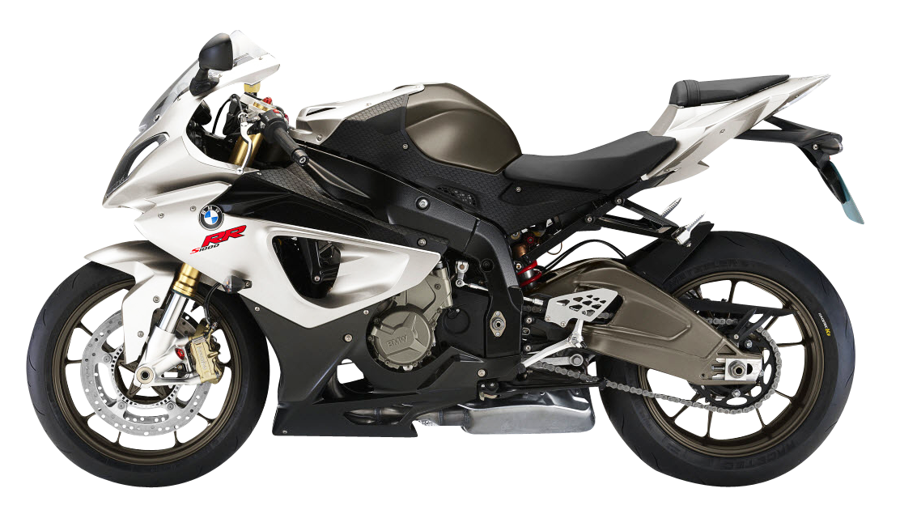

BMW S1000RR
The 2015 BMW S1000RR is a high-performance sportbike with aggressive styling, a 999cc inline-four engine (199 hp), and advanced electronics. Its lightweight frame, traction control, and riding modes ensure top-tier handling and speed.